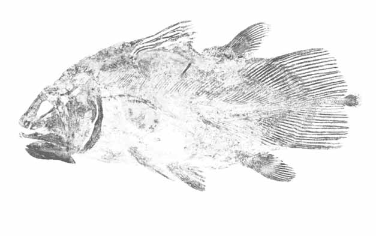

Latimeria chalumnae
90-200cm
2. Celacanto Indonesio
Latimeria menadoensis
140-250cm
FÓSIL JURÁSICO SUPERIOR
Peces bentónicos de la zona de transición 02 |
Este famoso fósil viviente fue descubierto por una conservadora del museo natural East London, Marjorie Courtenay-Latimer, en el puerto de East London, Sudáfrica, un 22 de Diciembre de 1938. Causó conmoción que un pez fósil que se creía extinto desde hacía 60 millones de años, no hubiera cambiado de aspecto y siguiera vivo. La palabra griega see-a-canths, que significa huesos huecos, se convirtió en el nombre común para este pez. La Sra. Latimer y el primer yacimiento donde se descubrió la especie le dieron el nombre científico. Se ha observado a la deriva cabeza abajo en cuevas rocosas a unos 150-300 m , nadando con las aletas dorsal y caudal oscilando hacia el mismo lado. Las escamas parecen estar rellenas de grasa y ser aceitosas, están cubiertas de una estructura de esmalte conocida como escamas duras. En 1997 se encontró otro celacanto en Sulawesi (Indonesia), a 9.000 km de Sudáfrica, y los análisis de ADN confirmaron que se trataba de una especie distinta que se ramificó hace millones de años, lo que significa que ahora hay dos especies de celacantos en una misma familia y género. Se trata de un impresionante superviviente de hace 400 millones de años (mediados del período Devónico). |
|
|
1. Celacanto Latimeria chalumnae 90-200cm 2. Celacanto Indonesio Latimeria menadoensis 140-250cm |
|
|  FÓSIL JURÁSICO SUPERIOR |